Sim-on-Wheels: Physical World in the Loop Simulation for Autonomous Driving
- 1Department of Computer Science, University of Illinois at Urbana-Champaign
- 2Center for Autonomy at the University of Illinois at Urbana-Champaign
- * Equal Contribution
Abstract
We present Sim-on-Wheels, a safe, realistic, and vehicle-in-loop framework to test autonomous vehicles’ performance in the real world under safety-critical scenarios. Sim-on-wheels runs on a self-driving vehicle operating in the physical world. It creates virtual traffic participants with risky behaviors and seamlessly inserts the virtual events into images perceived from the physical world in real-time. The manipulated images are fed into autonomy, allowing the self-driving vehicle to react to such virtual events. The full pipeline runs on the actual vehicle and interacts with the physical world, but the safety-critical events it sees are virtual. Sim-on-Wheels is safe, interactive, realistic, and easy to use. The experiments demonstrate the potential of Sim-on-Wheels to facilitate the process of testing autonomous driving in challenging real-world scenes with high fidelity and low risk.
Supplementary Video
Scenario Diversity
Sim-on-Wheels is highly flexible and generates scenarios with different difficulty levels. The scenarios include static human/objects, a traffic intersection, and jaywalkers with different speeds and occluding walls.
| 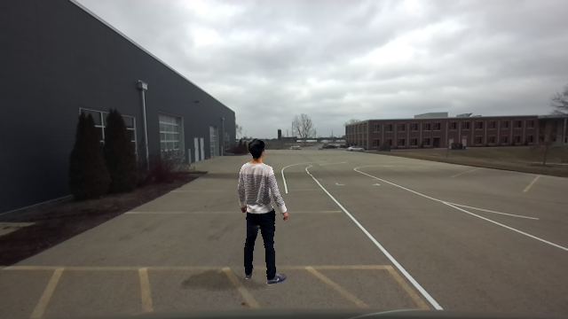 |
 |
| Scanned Human | Virtual Objects |
| 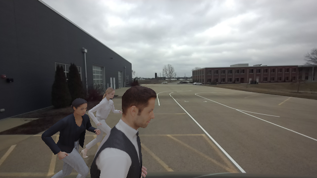 | 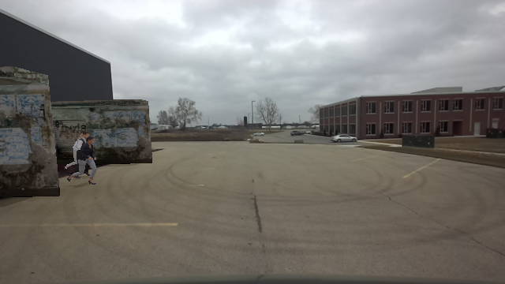 |
| Jaywalkers | Jaywalkers with occlusion |
 |
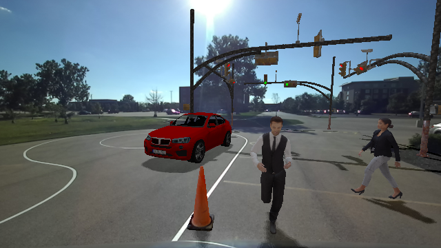 |
| Intersection | Mixed Scenarios |
Generalization to Other Environments
We can easily adapt to any environment as long as the scenario is compatible with the environment mapping. For example, we ran our Sim-on-Wheels on KITTI-360 data to simulate scenarios on the street roads as shown below:
1. KITTI-360
| Original | Sim-on-Wheels |
| 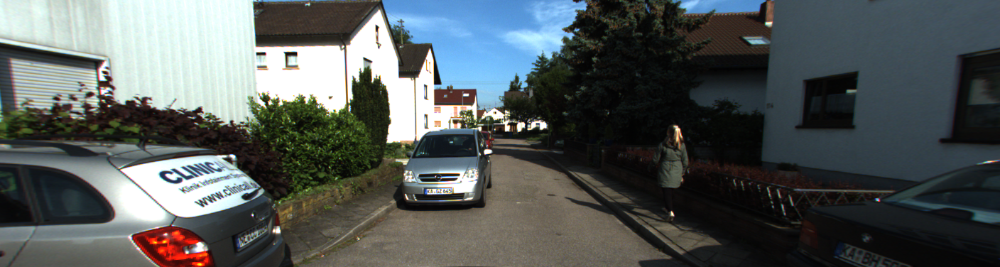 | 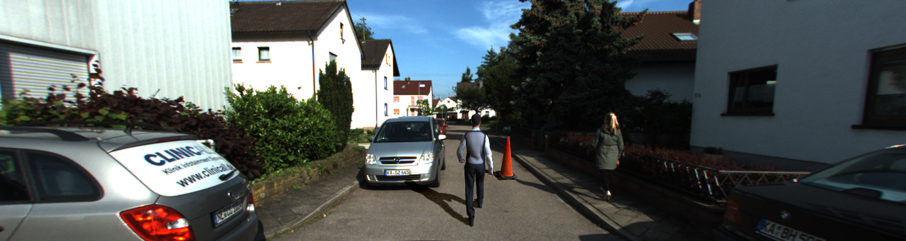 |
| 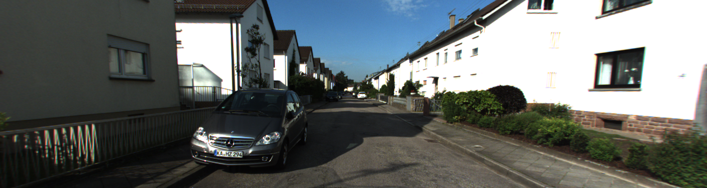 | |
| 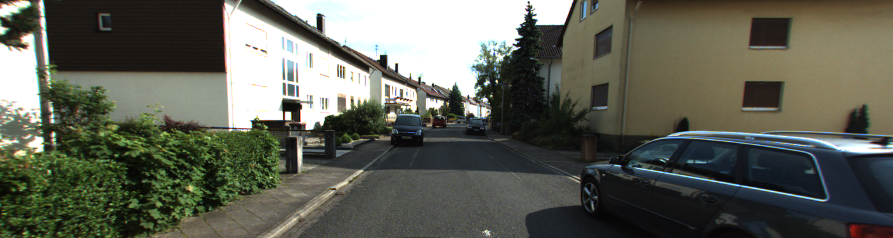 | 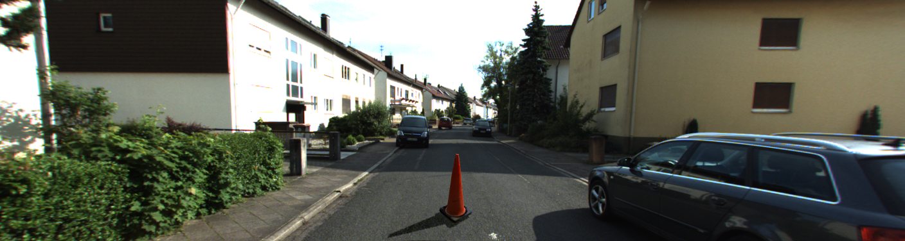 |
| 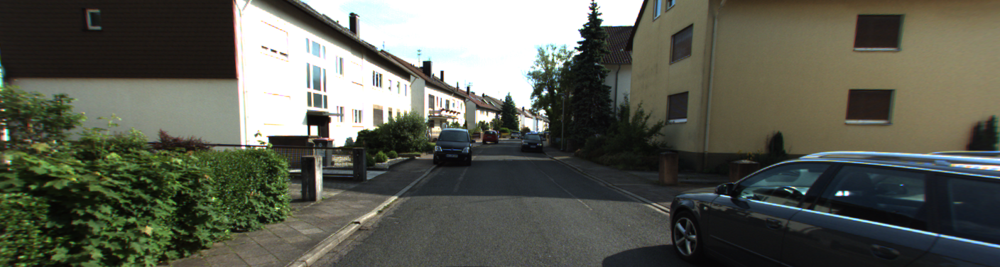 | 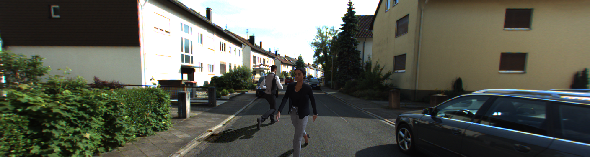 |
| 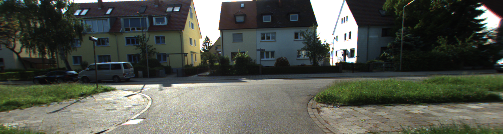 | 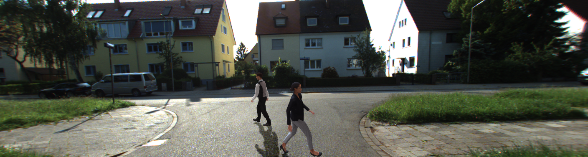 |
2. Tests in Street Scenarios
Additionally, to showcase the generalization, we ran Sim-on-Wheels on our GEM vehicle in daily streets beyond agent-free setting, e.g., empty testbed. Due to our university’s policy, we are not allowed to test outside our test track at large scale. We plan to test in more complicated real-world environments in future.
| Original | Sim-on-Wheels |
| 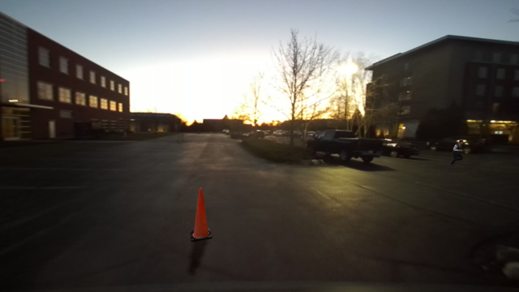 | |
| 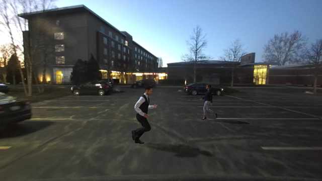 |
Scalibility to Large Amount of Agents
Unlike real-world road testing, Sim-on-Wheels can insert agents itself into the background and can scale to insert many agents without significant loss in rendering speed. We conducted the following experiment under multiple resolution and various number of virtual objects. Our experiment shows that under the same resolution, the rendering speed is not affected much by the increasing number of virtual objects.